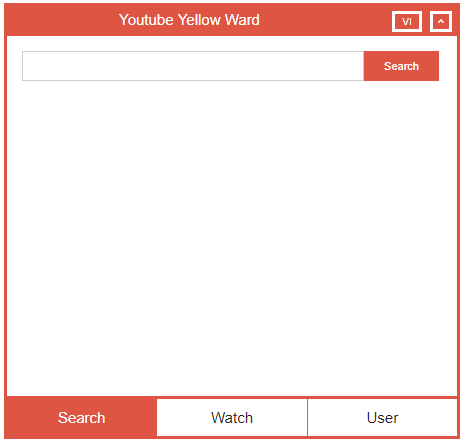
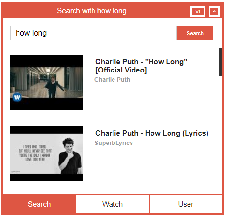
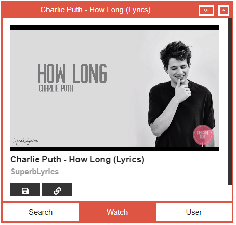
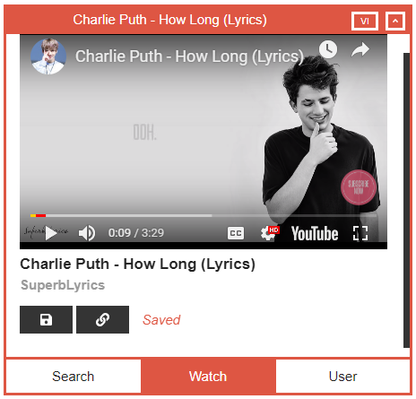
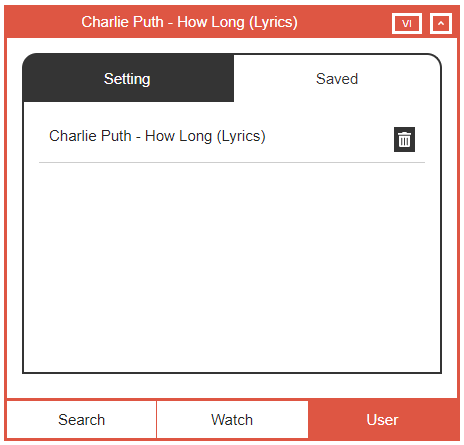
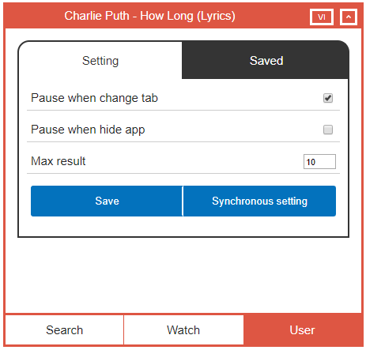

Youtube Yellow Ward
Info
Chrome extension help user watch Youtube inside chrome tab.
- User can search video by keyword.
- Save video, copy video url in clipboard.
- Move extension windows in Chrome tab.
- Setting number results and stop video when change tab or hide windows
- Support English and Vietnamese
Features
Search
Giao diện của màn hình tìm kiếm video. Nhập từ khóa mà bạn muốn tìm kiếm vào vào chọn Search
. Kết quả tìm kiếm từ Youtube sẽ được hiển thị ở phía dưới khung tìm kiếm.
Để xem video bạn chỉ cần chọn vào video bạn muốn xem. Video sẽ được hiển thị ở tab Watch.
Watch
Để lưu lại video bạn chỉ cần chọn vào biểu tượng lưu bên dưới tên channel.
User
Video sẽ được lưu lại ở tab Saved của phần User.
Tùy chỉnh các setting ở trong phần setting của User. Bạn có thể điều chỉnh số lượng kết quả trả về theo từng trang, tạm dùng video khi chuyển tab hoặc ẩn app.
Header
Các bạn có thể kéo thả cửa sổ của Youtube Yellow Ward khi chọn tiêu đề. Có thể ẩn cửa số khi chọn vào nút ẩn.
Team
Nguyen Thai 'Tasy' Sang
Developer, Product director
Contact: thaisang.nguyen3894@gmail.com